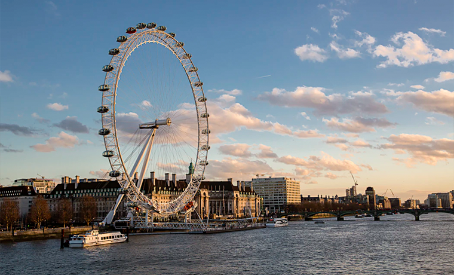
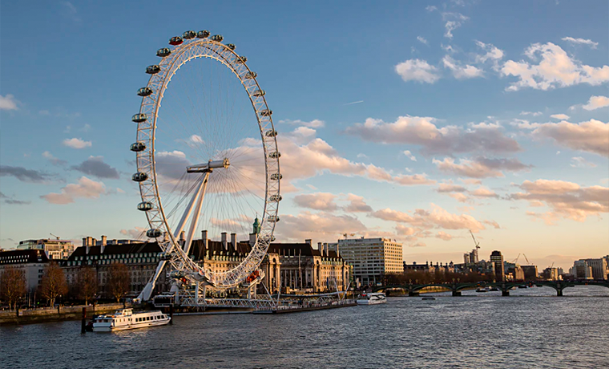

London
London is the capital city of England. It is the most populous city in the United Kingdom, with a metropolitan area of over 13 million inhabitants.
Standing on the River Thames, London has been a major settlement for two millennia, its history going back to its founding by the Romans, who named it Londinium.
London's ancient core, the City of London, largely retains its 2.9 km² mediaeval boundaries and in 2011 had a resident population of 7,375; making it the smallest city in England.
Since at least the 19th century, the term London has also referred to the metropolis developed around this core. The bulk of this conurbation forms the Greater London administrative area (coterminous with the London region), governed by the Mayor of London and the London Assembly.
 
